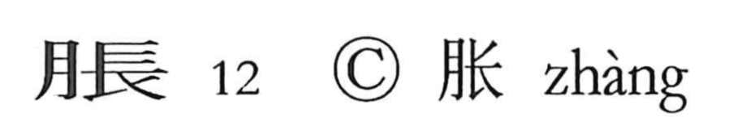

脹

Kun: fukureru, hareru | On: cho
to swell ・ distension ・ bloating
Explanation
A phono-semantic character: the flesh radical marks the body, while 長, depicting an elder with long hair in profile, supplies the sound (On reading cho) and a nuance of length or largeness. In early texts the word was often written with 張; in the Zuo Tradition, for example, “[about to eat] the belly swelled, so he went to the privy,” where 張 conveys a sudden abdominal swelling and ache. From this core sense, 脹 names abdominal distension (as in 脹満) and, more broadly, any swelling or becoming swollen, as in compounds like 膨脹.